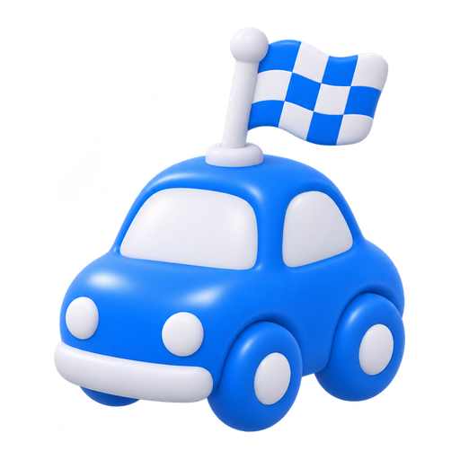
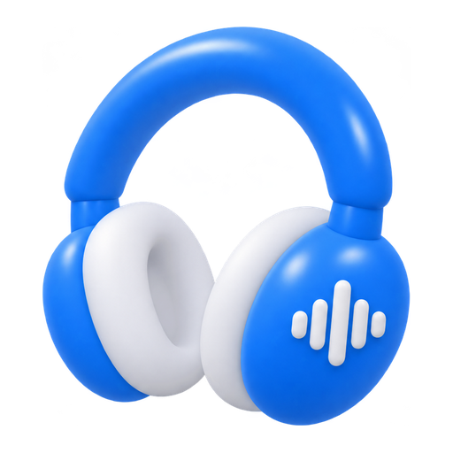

웹 시연 · 도착 시간과 주행 상태는 DEMO에서 입력해요.
웹에서는 도착 시간과 주행 상태를 직접 넣어요.
들은 구간에서 모은 표현이에요. ▶를 누르면 원문 다음 뜻을 들려드려요.
재생 후 지도 등 다른 화면으로 전환하고 돌아오세요. 아래 기록에서 재생 진행과 중단 여부를 확인할 수 있어요.
위치는 이 기기에서만 확인하며 서버로 전송하지 않아요. 주행 상태는 자동 변경하지 않아요.